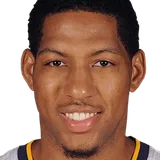

His best final NBA finish was #4 of 30, with the 2013-14 Indiana Pacers. In his 586 games for 3 teams over 10 seasons they went 283–303 (48.3%), −20 games under .500, with an average final finish of 14.2. The biggest one-season rise in his career: the Indiana Pacers went from #16 in 2010-11 to #5 in 2011-12.
Jump to: Record by opponent · Season by season · Teammate help
Compare Danny Granger with…
Suggested, same era and similar teammate help:

Final NBA finish, season by season
Title Finals Other playoffs Missed playoffs. #1 = champion; the dashed line is last place that season. Each point opens that season's final standings.
All 30 teams ranked in 2013-14, his best finish (#4)Teammate help
 Paul George7.93 seasons
Paul George7.93 seasons Roy Hibbert2.52 seasons
Roy Hibbert2.52 seasons- Jermaine O'Neal2.02 seasons
Career
Career records (W–L, W − L, with and without) include 2026-27 games through Nov. 18, 2026; season counts and finishes are through 2025-26. Each card opens its board in the same scope. How we count.

Latest completed seasons
Season by season
Newest first; every header sorts. Final NBA finish is the team's rank among all teams that season (#1 = champion) and opens that season's standings. "Without him" uses the team-season window; the span line counts only the games between his first and last game for the team.
| 2014-15 | #21 of 30 | 37–45 45.1% | Missed playoffs | 30 of 82 | 11–19 36.7% | 26–26 50.0%span: 6–6, gap −13.3 | −13.3 | |
| 2013-14 | #4 of 30 | 56–26 68.3% | Lost conf finals 2–4 | 29 of 82 | 21–8 72.4% | 25–5 83.3%span: N/A, gap N/A | −10.9 | |
| 2013-14 | LA Clippersstint 2/2, 03-04 to 03-273rd West | #5 of 30 | 57–25 69.5% | Lost conf semis 2–4 | 12 of 82 | 10–2 83.3% | 10–4 71.4%span: N/A, gap N/A | +11.9 |
| 2012-13 | #4 of 30 | 49–32 60.5% | Lost conf finals 3–4 | 5 of 81 | 4–1 80.0% | 45–31 59.2%span: N/A, gap N/A | +20.8 | |
| 2011-12 | #5 of 30 | 42–24 63.6% | Lost conf semis 2–4 | 62 of 66 | 41–21 66.1% | 1–3 25.0%span: 0–2, gap +66.1 | +41.1 | |
| 2010-11 | #16 of 30 | 37–45 45.1% | Lost 1st round 1–4 | 79 of 82 | 36–43 45.6% | 1–2 33.3%span: 1–1, gap −4.4 | +12.2 | |
| 2009-10 | #21 of 30 | 32–50 39.0% | Missed playoffs | 62 of 82 | 25–37 40.3% | 7–13 35.0%span: 7–13, gap +5.3 | +5.3 | |
| 2008-09 | #18 of 30 | 36–46 43.9% | Missed playoffs | 67 of 82 | 27–40 40.3% | 9–6 60.0%span: 9–6, gap −19.7 | −19.7 | |
| 2007-08 | #20 of 30 | 36–46 43.9% | Missed playoffs | 80 of 82 | 34–46 42.5% | 2–0 100.0%span: 2–0, gap −57.5 | −57.5 | |
| 2006-07 | #19 of 30 | 35–47 42.7% | Missed playoffs | 82 of 82 | 35–47 42.7% | N/A | N/A | |
| 2005-06 | #14 of 30 | 41–41 50.0% | Lost 1st round 2–4 | 78 of 82 | 39–39 50.0% | 2–2 50.0%span: 2–2, gap 0.0 | 0.0 |
On/off, starts and close games
From the lineup data, 1996-97 on. On/off is net points per 100 possessions with him on the floor minus off, a different unit from the win-rate gaps. Started and off the bench are team records in those games; close games are those within 5 points in the last 5 minutes with him on the floor.
| 2014-15 | −6.6 | 2–4 33.3% | 9–15 37.5% | 3–5 37.5% | |
| 2013-14 | +0.3 | 1–1 50.0% | 20–7 74.1% | 3–1 75.0% | |
| 2013-14 | LA Clippers | −24.7 | N/A | 10–2 83.3% | 1–0 100.0% |
| 2012-13 | −25.0 | N/A | 4–1 80.0% | N/A | |
| 2011-12 | +10.9 | 41–21 66.1% | N/A | 20–10 66.7% | |
| 2010-11 | +0.9 | 36–43 45.6% | N/A | 16–19 45.7% | |
| 2009-10 | +5.9 | 25–37 40.3% | N/A | 8–15 34.8% | |
| 2008-09 | +11.6 | 27–39 40.9% | 0–1 0.0% | 17–27 38.6% | |
| 2007-08 | −4.5 | 34–46 42.5% | N/A | 17–26 39.5% | |
| 2006-07 | −0.4 | 21–36 36.8% | 14–11 56.0% | 19–25 43.2% | |
| 2005-06 | −6.0 | 8–9 47.1% | 31–30 50.8% | 15–22 40.5% |
Teammate help by season
Two separate numbers per season, each with every teammate that adds to it. Help this season = Teammates Score points for honors won that season by teammates who shared a game with him. Help coming in = the same teammates' honors from the season before. How help works.
- 2014-15
 Miami
Miami
Help this season: 2 = 1 Chris Bosh + 1 Dwyane Wade
 Chris Bosh All-Star125 g
Chris Bosh All-Star125 g Dwyane Wade All-Star119 g
Dwyane Wade All-Star119 g
More: help coming in and other teammates
Help coming in (teammates' honors the season before): 2 = 1 Chris Bosh + 1 Dwyane Wade
Other teammates (no honors that season): Mario Chalmers 30 g, Norris Cole 28 g, Luol Deng 24 g, Chris Andersen 24 g, Shawne Williams 23 g, James Ennis 22 g, Hassan Whiteside 21 g, Udonis Haslem 20 g, Shabazz Napier 20 g, Justin Hamilton 13 g, Tyler Johnson 7 g, Josh McRoberts 3 g, Andre Dawkins 2 g, Shannon Brown 1 g
- 2013-14
 Indiana
Indiana
Help this season: 5.5 = 4 Paul George + 1.5 Roy Hibbert
Paul George All-NBA 3rdAll-StarAll-Def 1st429 gRoy Hibbert All-StarAll-Def 2nd1.529 g
More: help coming in and other teammates
Help coming in (teammates' honors the season before): 3.75 = 3.75 Paul George
Other teammates (no honors that season): David West 29 g, Luis Scola 29 g, George Hill 29 g, CJ Watson 29 g, Ian Mahinmi 29 g, Lance Stephenson 27 g, Rasual Butler 21 g, Donald Sloan 16 g, Orlando Johnson 15 g, Chris Copeland 13 g, Solomon Hill 2 g
- 2013-14LA Clippers
Help this season: 10.5 = 6 Chris Paul + 4 Blake Griffin + 0.5 Jamal Crawford
 Chris Paul All-NBA 1stAll-StarAll-Def 1st612 g
Chris Paul All-NBA 1stAll-StarAll-Def 1st612 g Blake Griffin All-NBA 2ndAll-Star412 g
Blake Griffin All-NBA 2ndAll-Star412 g Jamal Crawford Sixth Man0.55 g
Jamal Crawford Sixth Man0.55 g
More: help coming in and other teammates
Help coming in (teammates' honors the season before): 10.5 = 6.5 Chris Paul + 4 Blake Griffin
Other teammates (no honors that season): Matt Barnes 12 g, DeAndre Jordan 12 g, Glen Davis 12 g, Hidayet Turkoglu 11 g, Darren Collison 10 g, Willie Green 9 g, Reggie Bullock 4 g, Jared Dudley 4 g, Ryan Hollins 4 g
- 2012-13Indiana
Help this season: 3.75 = 3.75 Paul George
Paul George All-NBA 3rdAll-StarAll-Def 2ndMIP3.755 g
More: help coming in and other teammates
Help coming in (teammates' honors the season before): 1 = 1 Roy Hibbert
Other teammates (no honors that season): David West 5 g, Orlando Johnson 5 g, Lance Stephenson 5 g, Tyler Hansbrough 5 g, George Hill 5 g, DJ Augustin 5 g, Ian Mahinmi 5 g, Roy Hibbert 4 g, Sam Young 2 g, Jeff Ayres 2 g, Gerald Green 1 g
- 2011-12Indiana
Help this season: 1 = 1 Roy Hibbert
Roy Hibbert All-Star162 g
More: help coming in and other teammates
Help coming in (teammates' honors the season before): 0.125 = 0.125 Paul George
Other teammates (no honors that season): David West 62 g, Paul George 62 g, Tyler Hansbrough 62 g, Dahntay Jones 61 g, Louis Amundson 57 g, Darren Collison 56 g, George Hill 49 g, AJ Price 40 g, Lance Stephenson 38 g, Leandro Barbosa 21 g, Jeff Ayres 17 g, Jeff Foster 10 g, Kyrylo Fesenko 2 g
- 2010-11Indiana
Help this season: 0.125 = 0.125 Paul George
Paul George All-Rookie 2nd0.12559 g
More: help coming in and other teammates
Help coming in (teammates' honors the season before): 0.25 = 0.25 Darren Collison
Other teammates (no honors that season): Roy Hibbert 78 g, Darren Collison 76 g, Josh McRoberts 69 g, Tyler Hansbrough 68 g, Brandon Rush 64 g, Mike Dunleavy 59 g, Jeff Foster 55 g, AJ Price 48 g, James Posey 46 g, Dahntay Jones 42 g, TJ Ford 39 g, Solomon Jones 37 g, Lance Stephenson 12 g
- 2009-10IndianaHelp this season: 0, no honored teammate
- 2008-09IndianaHelp this season: 0, no honored teammate
- 2007-08IndianaHelp this season: 0, no honored teammate
More: help coming in
Help coming in (teammates' honors the season before): 1 = 1 Jermaine O'Neal
- 2006-07Indiana
Help this season: 1 = 1 Jermaine O'Neal
Jermaine O'Neal All-Star169 gMore: help coming in and other teammates
Help coming in (teammates' honors the season before): 1 = 1 Jermaine O'Neal
Other teammates (no honors that season): Darrell Armstrong 81 g, Jeff Foster 75 g, Jamaal Tinsley 72 g, Maceo Baston 47 g, Shawne Williams 46 g, Marquis Daniels 45 g, Mike Dunleavy 43 g, Troy Murphy 42 g, Ike Diogu 42 g, Orien Greene 41 g, Rawle Marshall 40 g, Stephen Jackson 37 g, Sarunas Jasikevicius 37 g, Al Harrington 36 g and 3 more
- 2005-06Indiana
Help this season: 2 = 1 Jermaine O'Neal + 1 Metta World Peace
Jermaine O'Neal All-Star148 g Metta World Peace All-Def 1st113 g
Metta World Peace All-Def 1st113 g
More: help coming in and other teammates
Help coming in (teammates' honors the season before): 1 = 1 Jermaine O'Neal
Other teammates (no honors that season): Stephen Jackson 77 g, Anthony Johnson 72 g, Sarunas Jasikevicius 71 g, Fred Jones 65 g, David Harrison 64 g, Jeff Foster 62 g, Austin Croshere 47 g, Scot Pollard 41 g, Eddie Gill 40 g, Predrag Stojakovic 39 g, Jamaal Tinsley 39 g, Samaki Walker 7 g, Jonathan Bender 2 g
Record against each opponent
- Best regular-season record against one franchise: 19–9 (67.9%) against the Brooklyn Nets in 28 games.
- Toughest regular-season record against one franchise: 9–16 (36.0%) against the Orlando Magic in 25 games.
Regular season, through 2025-26 (2026-27 games not included): 586 games, 283–303, against 30 franchises.
Grouped by franchise (named as today); game lists keep each team's name that season. Filters and the tab are kept in the URL, so a filtered view can be shared.
| Games list | |||||||
|---|---|---|---|---|---|---|---|
| 31 | 15–16 | 48.4% | −1 | N/A | 2005-06 to 2014-15 | ||
| 29 | 14–15 | 48.3% | −1 | N/A | 2005-06 to 2014-15 | ||
| 28 | 11–17 | 39.3% | −6 | N/A | 2005-06 to 2014-15 | ||
| 28 | 19–9 | 67.9% | +10 | 0–1 (2–4 in games) | 2005-06 to 2014-15 | ||
| 27 | 12–15 | 44.4% | −3 | N/A | 2005-06 to 2014-15 | ||
| 27 | 16–11 | 59.3% | +5 | N/A | 2005-06 to 2014-15 | ||
| 27 | 14–13 | 51.9% | +1 | N/A | 2005-06 to 2013-14 | ||
| 25 | 10–15 | 40.0% | −5 | 0–1 (1–4 in games) | 2005-06 to 2014-15 | ||
| 25 | 9–16 | 36.0% | −7 | 1–0 (4–1 in games) | 2005-06 to 2014-15 | ||
| 25 | 15–10 | 60.0% | +5 | N/A | 2005-06 to 2013-14 | ||
| 24 | 11–13 | 45.8% | −2 | 0–1 (2–4 in games) | 2005-06 to 2011-12 | ||
| 24 | 15–9 | 62.5% | +6 | N/A | 2005-06 to 2014-15 | ||
| 23 | 13–10 | 56.5% | +3 | N/A | 2005-06 to 2014-15 | ||
| 23 | 13–10 | 56.5% | +3 | N/A | 2005-06 to 2014-15 | ||
| 18 | 12–6 | 66.7% | +6 | 1–0 (4–3 in games) | 2005-06 to 2014-15 | ||
| 17 | 4–13 | 23.5% | −9 | N/A | 2005-06 to 2013-14 | ||
| 16 | 3–13 | 18.8% | −10 | N/A | 2005-06 to 2014-15 | ||
| 16 | 8–8 | 50.0% | 0 | N/A | 2005-06 to 2014-15 | ||
| 16 | 8–8 | 50.0% | 0 | N/A | 2005-06 to 2013-14 | ||
| 15 | 4–11 | 26.7% | −7 | N/A | 2005-06 to 2014-15 | ||
| 15 | 9–6 | 60.0% | +3 | N/A | 2005-06 to 2014-15 | ||
| 14 | 8–6 | 57.1% | +2 | N/A | 2005-06 to 2014-15 | ||
| 14 | 5–9 | 35.7% | −4 | N/A | 2005-06 to 2014-15 | ||
| 14 | 6–8 | 42.9% | −2 | 0–1 (2–4 in games) | 2005-06 to 2014-15 | ||
| 14 | 7–7 | 50.0% | 0 | N/A | 2005-06 to 2014-15 | ||
| 13 | 7–6 | 53.8% | +1 | N/A | 2006-07 to 2014-15 | ||
| 13 | 9–4 | 69.2% | +5 | N/A | 2005-06 to 2014-15 | ||
| 12 | 1–11 | 8.3% | −10 | N/A | 2005-06 to 2011-12 | ||
| 11 | 4–7 | 36.4% | −3 | N/A | 2005-06 to 2014-15 | ||
| 2 | 1–1 | 50.0% | 0 | N/A | 2014-15 |
Rows add up to his career record in his games. A playoff series counts when he played in it; early round-robin games show as games only. How we count.
Playoffs, with and without him
| 2013-14 | LA Clippers | Lost in the conference semifinals 2–4 to | #5 of 30 | 13 of 13 | 6–7 46.2% |
| 2011-12 | Lost in the conference semifinals 2–4 to | #5 of 30 | 11 of 11 | 6–5 54.5% | |
| 2010-11 | Lost in the first round 1–4 to | #16 of 30 | 5 of 5 | 1–4 20.0% | |
| 2005-06 | Lost in the first round 2–4 to | #14 of 30 | 6 of 6 | 2–4 33.3% |
He played every playoff game for these teams, so there is no "without him" record.
Arrival and departure
Team wins per 82 games the season before he arrived vs his first season there, and his last season vs the season after he left. Per 82 so short seasons compare fairly. These are team records, not a measure of what he did.
| Left | 2015-16 | 2014-15: 37–45 37.0 per 82 | 2015-16: 48–34 48.0 per 82 | +11.0 wins | |
| Arrived | 2014-15 | 2013-14: 54–28 54.0 per 82 | 2014-15: 37–45 37.0 per 82 | −17.0 wins | |
| Left | 2014-15 | 2013-14: 56–26 56.0 per 82 | 2014-15: 38–44 38.0 per 82 | −18.0 wins | |
| Left | LA Clippers | 2014-15 | 2013-14: 57–25 57.0 per 82 | 2014-15: 56–26 56.0 per 82 | −1.0 wins |
| Arrived | LA Clippers | 2013-14 | 2012-13: 56–26 56.0 per 82 | 2013-14: 57–25 57.0 per 82 | +1.0 wins |
| Arrived | 2005-06 | 2004-05: 44–38 44.0 per 82 | 2005-06: 41–41 41.0 per 82 | −3.0 wins |
Seasons split between teams
Each team's record before his first game for it, inside his window (games with and without him) and after his last game, in the seasons he played for two or more teams.
| 2013-14 | Dec. 20, 2013 to Feb. 19, 2014 | N/A | 46–13 78.0% | 10–13 43.5% | 29 | |
| 2013-14 | LA Clippers | March 4, 2014 to March 27, 2014 | 37–19 66.1% | 20–6 76.9% | N/A | 12 |
Best duos
Team record in regular-season games both played, top 10 by win %, at least 50 games together.
 George Hill
60–23 72.3%
George Hill
60–23 72.3% David West
66–30 68.8%
David West
66–30 68.8% Louis Amundson
37–20 64.9%
Louis Amundson
37–20 64.9% Lance Stephenson
51–31 62.2%
Lance Stephenson
51–31 62.2%- Paul George
94–61 60.6%
 Tyler Hansbrough
85–67 55.9%
Tyler Hansbrough
85–67 55.9% Darren Collison
79–63 55.6%
Darren Collison
79–63 55.6% Dahntay Jones
83–76 52.2%
Dahntay Jones
83–76 52.2%- Stephen Jackson 59–55 51.8%
- AJ Price 67–65 50.8%